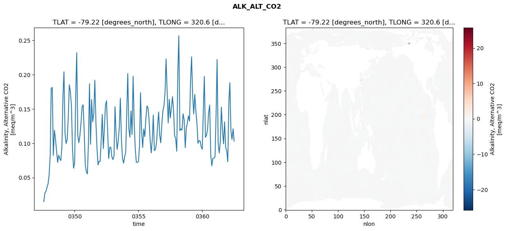
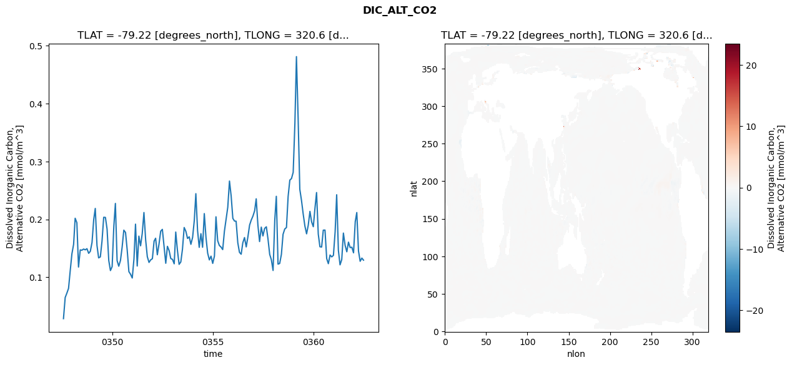
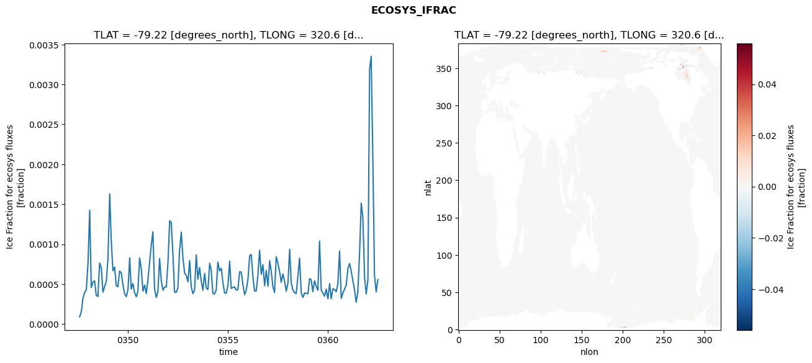
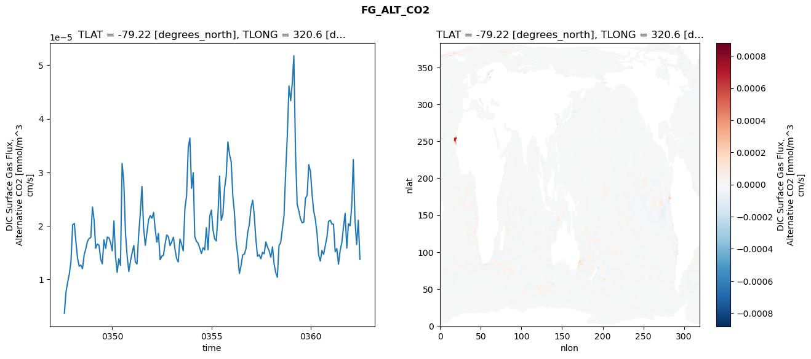

glb-dor_North_Atlantic_basin_039_1999-07-01_00158#
Simulation details#
Case: smyle.cdr-atlas-v0.glb-dor_North_Atlantic_basin_039_1999-07-01_00158.001
Basin: North_Atlantic_basin
Polygon: 39.0
Start date: 1999-07
Show code cell source Hide code cell source
import xarray as xr
import matplotlib.pyplot as plt
Show code cell source Hide code cell source
zarr_store = "/path/to/zarr/store"
# Parameters
zarr_store = "/global/cfs/projectdirs/m4746/Projects/Ocean-CDR-Atlas-v0/data/validation/smyle.cdr-atlas-v0.glb-dor_North_Atlantic_basin_039_1999-07-01_00158.001.validation.zarr"
Show code cell source Hide code cell source
%%time
ds_o = xr.open_zarr(zarr_store).compute()
ds_o
CPU times: user 584 ms, sys: 465 ms, total: 1.05 s
Wall time: 1.3 s
<xarray.Dataset> Size: 2MB
Dimensions: (nlat: 384, nlon: 320, time: 180)
Coordinates:
TLAT float64 8B -79.22
TLONG float64 8B 320.6
ULAT float64 8B -78.95
ULONG float64 8B 321.1
* time (time) object 1kB 0347-08-01 00:00:00 ... 0362-07-01 0...
z_t float32 4B 500.0
Dimensions without coordinates: nlat, nlon
Data variables:
ALK_ALT_CO2_diff (nlat, nlon) float32 492kB nan nan nan ... nan nan nan
ALK_ALT_CO2_rmse (time) float64 1kB 0.01483 0.02757 ... 0.1212 0.1031
DIC_ALT_CO2_diff (nlat, nlon) float32 492kB nan nan nan ... nan nan nan
DIC_ALT_CO2_rmse (time) float64 1kB 0.02831 0.06484 ... 0.133 0.1294
ECOSYS_IFRAC_diff (nlat, nlon) float32 492kB nan nan nan ... nan nan nan
ECOSYS_IFRAC_rmse (time) float64 1kB 9.007e-05 0.0001553 ... 0.0005587
FG_ALT_CO2_diff (nlat, nlon) float32 492kB nan nan nan ... nan nan nan
FG_ALT_CO2_rmse (time) float64 1kB 3.645e-06 7.717e-06 ... 1.374e-05xarray.Dataset
- nlat: 384
- nlon: 320
- time: 180
- TLAT()float64-79.22
- long_name :
- array of t-grid latitudes
- units :
- degrees_north
array(-79.22052261)
- TLONG()float64320.6
- long_name :
- array of t-grid longitudes
- units :
- degrees_east
array(320.56250892)
- ULAT()float64-78.95
- long_name :
- array of u-grid latitudes
- units :
- degrees_north
array(-78.95289509)
- ULONG()float64321.1
- long_name :
- array of u-grid longitudes
- units :
- degrees_east
array(321.12500894)
- time(time)object0347-08-01 00:00:00 ... 0362-07-...
- bounds :
- time_bound
- long_name :
- time
array([cftime.DatetimeNoLeap(347, 8, 1, 0, 0, 0, 0, has_year_zero=True), cftime.DatetimeNoLeap(347, 9, 1, 0, 0, 0, 0, has_year_zero=True), cftime.DatetimeNoLeap(347, 10, 1, 0, 0, 0, 0, has_year_zero=True), cftime.DatetimeNoLeap(347, 11, 1, 0, 0, 0, 0, has_year_zero=True), cftime.DatetimeNoLeap(347, 12, 1, 0, 0, 0, 0, has_year_zero=True), cftime.DatetimeNoLeap(348, 1, 1, 0, 0, 0, 0, has_year_zero=True), cftime.DatetimeNoLeap(348, 2, 1, 0, 0, 0, 0, has_year_zero=True), cftime.DatetimeNoLeap(348, 3, 1, 0, 0, 0, 0, has_year_zero=True), cftime.DatetimeNoLeap(348, 4, 1, 0, 0, 0, 0, has_year_zero=True), cftime.DatetimeNoLeap(348, 5, 1, 0, 0, 0, 0, has_year_zero=True), cftime.DatetimeNoLeap(348, 6, 1, 0, 0, 0, 0, has_year_zero=True), cftime.DatetimeNoLeap(348, 7, 1, 0, 0, 0, 0, has_year_zero=True), cftime.DatetimeNoLeap(348, 8, 1, 0, 0, 0, 0, has_year_zero=True), cftime.DatetimeNoLeap(348, 9, 1, 0, 0, 0, 0, has_year_zero=True), cftime.DatetimeNoLeap(348, 10, 1, 0, 0, 0, 0, has_year_zero=True), cftime.DatetimeNoLeap(348, 11, 1, 0, 0, 0, 0, has_year_zero=True), cftime.DatetimeNoLeap(348, 12, 1, 0, 0, 0, 0, has_year_zero=True), cftime.DatetimeNoLeap(349, 1, 1, 0, 0, 0, 0, has_year_zero=True), cftime.DatetimeNoLeap(349, 2, 1, 0, 0, 0, 0, has_year_zero=True), cftime.DatetimeNoLeap(349, 3, 1, 0, 0, 0, 0, has_year_zero=True), cftime.DatetimeNoLeap(349, 4, 1, 0, 0, 0, 0, has_year_zero=True), cftime.DatetimeNoLeap(349, 5, 1, 0, 0, 0, 0, has_year_zero=True), cftime.DatetimeNoLeap(349, 6, 1, 0, 0, 0, 0, has_year_zero=True), cftime.DatetimeNoLeap(349, 7, 1, 0, 0, 0, 0, has_year_zero=True), cftime.DatetimeNoLeap(349, 8, 1, 0, 0, 0, 0, has_year_zero=True), cftime.DatetimeNoLeap(349, 9, 1, 0, 0, 0, 0, has_year_zero=True), cftime.DatetimeNoLeap(349, 10, 1, 0, 0, 0, 0, has_year_zero=True), cftime.DatetimeNoLeap(349, 11, 1, 0, 0, 0, 0, has_year_zero=True), cftime.DatetimeNoLeap(349, 12, 1, 0, 0, 0, 0, has_year_zero=True), cftime.DatetimeNoLeap(350, 1, 1, 0, 0, 0, 0, has_year_zero=True), cftime.DatetimeNoLeap(350, 2, 1, 0, 0, 0, 0, has_year_zero=True), cftime.DatetimeNoLeap(350, 3, 1, 0, 0, 0, 0, has_year_zero=True), cftime.DatetimeNoLeap(350, 4, 1, 0, 0, 0, 0, has_year_zero=True), cftime.DatetimeNoLeap(350, 5, 1, 0, 0, 0, 0, has_year_zero=True), cftime.DatetimeNoLeap(350, 6, 1, 0, 0, 0, 0, has_year_zero=True), cftime.DatetimeNoLeap(350, 7, 1, 0, 0, 0, 0, has_year_zero=True), cftime.DatetimeNoLeap(350, 8, 1, 0, 0, 0, 0, has_year_zero=True), cftime.DatetimeNoLeap(350, 9, 1, 0, 0, 0, 0, has_year_zero=True), cftime.DatetimeNoLeap(350, 10, 1, 0, 0, 0, 0, has_year_zero=True), cftime.DatetimeNoLeap(350, 11, 1, 0, 0, 0, 0, has_year_zero=True), cftime.DatetimeNoLeap(350, 12, 1, 0, 0, 0, 0, has_year_zero=True), cftime.DatetimeNoLeap(351, 1, 1, 0, 0, 0, 0, has_year_zero=True), cftime.DatetimeNoLeap(351, 2, 1, 0, 0, 0, 0, has_year_zero=True), cftime.DatetimeNoLeap(351, 3, 1, 0, 0, 0, 0, has_year_zero=True), cftime.DatetimeNoLeap(351, 4, 1, 0, 0, 0, 0, has_year_zero=True), cftime.DatetimeNoLeap(351, 5, 1, 0, 0, 0, 0, has_year_zero=True), cftime.DatetimeNoLeap(351, 6, 1, 0, 0, 0, 0, has_year_zero=True), cftime.DatetimeNoLeap(351, 7, 1, 0, 0, 0, 0, has_year_zero=True), cftime.DatetimeNoLeap(351, 8, 1, 0, 0, 0, 0, has_year_zero=True), cftime.DatetimeNoLeap(351, 9, 1, 0, 0, 0, 0, has_year_zero=True), cftime.DatetimeNoLeap(351, 10, 1, 0, 0, 0, 0, has_year_zero=True), cftime.DatetimeNoLeap(351, 11, 1, 0, 0, 0, 0, has_year_zero=True), cftime.DatetimeNoLeap(351, 12, 1, 0, 0, 0, 0, has_year_zero=True), cftime.DatetimeNoLeap(352, 1, 1, 0, 0, 0, 0, has_year_zero=True), cftime.DatetimeNoLeap(352, 2, 1, 0, 0, 0, 0, has_year_zero=True), cftime.DatetimeNoLeap(352, 3, 1, 0, 0, 0, 0, has_year_zero=True), cftime.DatetimeNoLeap(352, 4, 1, 0, 0, 0, 0, has_year_zero=True), cftime.DatetimeNoLeap(352, 5, 1, 0, 0, 0, 0, has_year_zero=True), cftime.DatetimeNoLeap(352, 6, 1, 0, 0, 0, 0, has_year_zero=True), cftime.DatetimeNoLeap(352, 7, 1, 0, 0, 0, 0, has_year_zero=True), cftime.DatetimeNoLeap(352, 8, 1, 0, 0, 0, 0, has_year_zero=True), cftime.DatetimeNoLeap(352, 9, 1, 0, 0, 0, 0, has_year_zero=True), cftime.DatetimeNoLeap(352, 10, 1, 0, 0, 0, 0, has_year_zero=True), cftime.DatetimeNoLeap(352, 11, 1, 0, 0, 0, 0, has_year_zero=True), cftime.DatetimeNoLeap(352, 12, 1, 0, 0, 0, 0, has_year_zero=True), cftime.DatetimeNoLeap(353, 1, 1, 0, 0, 0, 0, has_year_zero=True), cftime.DatetimeNoLeap(353, 2, 1, 0, 0, 0, 0, has_year_zero=True), cftime.DatetimeNoLeap(353, 3, 1, 0, 0, 0, 0, has_year_zero=True), cftime.DatetimeNoLeap(353, 4, 1, 0, 0, 0, 0, has_year_zero=True), cftime.DatetimeNoLeap(353, 5, 1, 0, 0, 0, 0, has_year_zero=True), cftime.DatetimeNoLeap(353, 6, 1, 0, 0, 0, 0, has_year_zero=True), cftime.DatetimeNoLeap(353, 7, 1, 0, 0, 0, 0, has_year_zero=True), cftime.DatetimeNoLeap(353, 8, 1, 0, 0, 0, 0, has_year_zero=True), cftime.DatetimeNoLeap(353, 9, 1, 0, 0, 0, 0, has_year_zero=True), cftime.DatetimeNoLeap(353, 10, 1, 0, 0, 0, 0, has_year_zero=True), cftime.DatetimeNoLeap(353, 11, 1, 0, 0, 0, 0, has_year_zero=True), cftime.DatetimeNoLeap(353, 12, 1, 0, 0, 0, 0, has_year_zero=True), cftime.DatetimeNoLeap(354, 1, 1, 0, 0, 0, 0, has_year_zero=True), cftime.DatetimeNoLeap(354, 2, 1, 0, 0, 0, 0, has_year_zero=True), cftime.DatetimeNoLeap(354, 3, 1, 0, 0, 0, 0, has_year_zero=True), cftime.DatetimeNoLeap(354, 4, 1, 0, 0, 0, 0, has_year_zero=True), cftime.DatetimeNoLeap(354, 5, 1, 0, 0, 0, 0, has_year_zero=True), cftime.DatetimeNoLeap(354, 6, 1, 0, 0, 0, 0, has_year_zero=True), cftime.DatetimeNoLeap(354, 7, 1, 0, 0, 0, 0, has_year_zero=True), cftime.DatetimeNoLeap(354, 8, 1, 0, 0, 0, 0, has_year_zero=True), cftime.DatetimeNoLeap(354, 9, 1, 0, 0, 0, 0, has_year_zero=True), cftime.DatetimeNoLeap(354, 10, 1, 0, 0, 0, 0, has_year_zero=True), cftime.DatetimeNoLeap(354, 11, 1, 0, 0, 0, 0, has_year_zero=True), cftime.DatetimeNoLeap(354, 12, 1, 0, 0, 0, 0, has_year_zero=True), cftime.DatetimeNoLeap(355, 1, 1, 0, 0, 0, 0, has_year_zero=True), cftime.DatetimeNoLeap(355, 2, 1, 0, 0, 0, 0, has_year_zero=True), cftime.DatetimeNoLeap(355, 3, 1, 0, 0, 0, 0, has_year_zero=True), cftime.DatetimeNoLeap(355, 4, 1, 0, 0, 0, 0, has_year_zero=True), cftime.DatetimeNoLeap(355, 5, 1, 0, 0, 0, 0, has_year_zero=True), cftime.DatetimeNoLeap(355, 6, 1, 0, 0, 0, 0, has_year_zero=True), cftime.DatetimeNoLeap(355, 7, 1, 0, 0, 0, 0, has_year_zero=True), cftime.DatetimeNoLeap(355, 8, 1, 0, 0, 0, 0, has_year_zero=True), cftime.DatetimeNoLeap(355, 9, 1, 0, 0, 0, 0, has_year_zero=True), cftime.DatetimeNoLeap(355, 10, 1, 0, 0, 0, 0, has_year_zero=True), cftime.DatetimeNoLeap(355, 11, 1, 0, 0, 0, 0, has_year_zero=True), cftime.DatetimeNoLeap(355, 12, 1, 0, 0, 0, 0, has_year_zero=True), cftime.DatetimeNoLeap(356, 1, 1, 0, 0, 0, 0, has_year_zero=True), cftime.DatetimeNoLeap(356, 2, 1, 0, 0, 0, 0, has_year_zero=True), cftime.DatetimeNoLeap(356, 3, 1, 0, 0, 0, 0, has_year_zero=True), cftime.DatetimeNoLeap(356, 4, 1, 0, 0, 0, 0, has_year_zero=True), cftime.DatetimeNoLeap(356, 5, 1, 0, 0, 0, 0, has_year_zero=True), cftime.DatetimeNoLeap(356, 6, 1, 0, 0, 0, 0, has_year_zero=True), cftime.DatetimeNoLeap(356, 7, 1, 0, 0, 0, 0, has_year_zero=True), cftime.DatetimeNoLeap(356, 8, 1, 0, 0, 0, 0, has_year_zero=True), cftime.DatetimeNoLeap(356, 9, 1, 0, 0, 0, 0, has_year_zero=True), cftime.DatetimeNoLeap(356, 10, 1, 0, 0, 0, 0, has_year_zero=True), cftime.DatetimeNoLeap(356, 11, 1, 0, 0, 0, 0, has_year_zero=True), cftime.DatetimeNoLeap(356, 12, 1, 0, 0, 0, 0, has_year_zero=True), cftime.DatetimeNoLeap(357, 1, 1, 0, 0, 0, 0, has_year_zero=True), cftime.DatetimeNoLeap(357, 2, 1, 0, 0, 0, 0, has_year_zero=True), cftime.DatetimeNoLeap(357, 3, 1, 0, 0, 0, 0, has_year_zero=True), cftime.DatetimeNoLeap(357, 4, 1, 0, 0, 0, 0, has_year_zero=True), cftime.DatetimeNoLeap(357, 5, 1, 0, 0, 0, 0, has_year_zero=True), cftime.DatetimeNoLeap(357, 6, 1, 0, 0, 0, 0, has_year_zero=True), cftime.DatetimeNoLeap(357, 7, 1, 0, 0, 0, 0, has_year_zero=True), cftime.DatetimeNoLeap(357, 8, 1, 0, 0, 0, 0, has_year_zero=True), cftime.DatetimeNoLeap(357, 9, 1, 0, 0, 0, 0, has_year_zero=True), cftime.DatetimeNoLeap(357, 10, 1, 0, 0, 0, 0, has_year_zero=True), cftime.DatetimeNoLeap(357, 11, 1, 0, 0, 0, 0, has_year_zero=True), cftime.DatetimeNoLeap(357, 12, 1, 0, 0, 0, 0, has_year_zero=True), cftime.DatetimeNoLeap(358, 1, 1, 0, 0, 0, 0, has_year_zero=True), cftime.DatetimeNoLeap(358, 2, 1, 0, 0, 0, 0, has_year_zero=True), cftime.DatetimeNoLeap(358, 3, 1, 0, 0, 0, 0, has_year_zero=True), cftime.DatetimeNoLeap(358, 4, 1, 0, 0, 0, 0, has_year_zero=True), cftime.DatetimeNoLeap(358, 5, 1, 0, 0, 0, 0, has_year_zero=True), cftime.DatetimeNoLeap(358, 6, 1, 0, 0, 0, 0, has_year_zero=True), cftime.DatetimeNoLeap(358, 7, 1, 0, 0, 0, 0, has_year_zero=True), cftime.DatetimeNoLeap(358, 8, 1, 0, 0, 0, 0, has_year_zero=True), cftime.DatetimeNoLeap(358, 9, 1, 0, 0, 0, 0, has_year_zero=True), cftime.DatetimeNoLeap(358, 10, 1, 0, 0, 0, 0, has_year_zero=True), cftime.DatetimeNoLeap(358, 11, 1, 0, 0, 0, 0, has_year_zero=True), cftime.DatetimeNoLeap(358, 12, 1, 0, 0, 0, 0, has_year_zero=True), cftime.DatetimeNoLeap(359, 1, 1, 0, 0, 0, 0, has_year_zero=True), cftime.DatetimeNoLeap(359, 2, 1, 0, 0, 0, 0, has_year_zero=True), cftime.DatetimeNoLeap(359, 3, 1, 0, 0, 0, 0, has_year_zero=True), cftime.DatetimeNoLeap(359, 4, 1, 0, 0, 0, 0, has_year_zero=True), cftime.DatetimeNoLeap(359, 5, 1, 0, 0, 0, 0, has_year_zero=True), cftime.DatetimeNoLeap(359, 6, 1, 0, 0, 0, 0, has_year_zero=True), cftime.DatetimeNoLeap(359, 7, 1, 0, 0, 0, 0, has_year_zero=True), cftime.DatetimeNoLeap(359, 8, 1, 0, 0, 0, 0, has_year_zero=True), cftime.DatetimeNoLeap(359, 9, 1, 0, 0, 0, 0, has_year_zero=True), cftime.DatetimeNoLeap(359, 10, 1, 0, 0, 0, 0, has_year_zero=True), cftime.DatetimeNoLeap(359, 11, 1, 0, 0, 0, 0, has_year_zero=True), cftime.DatetimeNoLeap(359, 12, 1, 0, 0, 0, 0, has_year_zero=True), cftime.DatetimeNoLeap(360, 1, 1, 0, 0, 0, 0, has_year_zero=True), cftime.DatetimeNoLeap(360, 2, 1, 0, 0, 0, 0, has_year_zero=True), cftime.DatetimeNoLeap(360, 3, 1, 0, 0, 0, 0, has_year_zero=True), cftime.DatetimeNoLeap(360, 4, 1, 0, 0, 0, 0, has_year_zero=True), cftime.DatetimeNoLeap(360, 5, 1, 0, 0, 0, 0, has_year_zero=True), cftime.DatetimeNoLeap(360, 6, 1, 0, 0, 0, 0, has_year_zero=True), cftime.DatetimeNoLeap(360, 7, 1, 0, 0, 0, 0, has_year_zero=True), cftime.DatetimeNoLeap(360, 8, 1, 0, 0, 0, 0, has_year_zero=True), cftime.DatetimeNoLeap(360, 9, 1, 0, 0, 0, 0, has_year_zero=True), cftime.DatetimeNoLeap(360, 10, 1, 0, 0, 0, 0, has_year_zero=True), cftime.DatetimeNoLeap(360, 11, 1, 0, 0, 0, 0, has_year_zero=True), cftime.DatetimeNoLeap(360, 12, 1, 0, 0, 0, 0, has_year_zero=True), cftime.DatetimeNoLeap(361, 1, 1, 0, 0, 0, 0, has_year_zero=True), cftime.DatetimeNoLeap(361, 2, 1, 0, 0, 0, 0, has_year_zero=True), cftime.DatetimeNoLeap(361, 3, 1, 0, 0, 0, 0, has_year_zero=True), cftime.DatetimeNoLeap(361, 4, 1, 0, 0, 0, 0, has_year_zero=True), cftime.DatetimeNoLeap(361, 5, 1, 0, 0, 0, 0, has_year_zero=True), cftime.DatetimeNoLeap(361, 6, 1, 0, 0, 0, 0, has_year_zero=True), cftime.DatetimeNoLeap(361, 7, 1, 0, 0, 0, 0, has_year_zero=True), cftime.DatetimeNoLeap(361, 8, 1, 0, 0, 0, 0, has_year_zero=True), cftime.DatetimeNoLeap(361, 9, 1, 0, 0, 0, 0, has_year_zero=True), cftime.DatetimeNoLeap(361, 10, 1, 0, 0, 0, 0, has_year_zero=True), cftime.DatetimeNoLeap(361, 11, 1, 0, 0, 0, 0, has_year_zero=True), cftime.DatetimeNoLeap(361, 12, 1, 0, 0, 0, 0, has_year_zero=True), cftime.DatetimeNoLeap(362, 1, 1, 0, 0, 0, 0, has_year_zero=True), cftime.DatetimeNoLeap(362, 2, 1, 0, 0, 0, 0, has_year_zero=True), cftime.DatetimeNoLeap(362, 3, 1, 0, 0, 0, 0, has_year_zero=True), cftime.DatetimeNoLeap(362, 4, 1, 0, 0, 0, 0, has_year_zero=True), cftime.DatetimeNoLeap(362, 5, 1, 0, 0, 0, 0, has_year_zero=True), cftime.DatetimeNoLeap(362, 6, 1, 0, 0, 0, 0, has_year_zero=True), cftime.DatetimeNoLeap(362, 7, 1, 0, 0, 0, 0, has_year_zero=True)], dtype=object) - z_t()float32500.0
- long_name :
- depth from surface to midpoint of layer
- positive :
- down
- units :
- centimeters
- valid_max :
- 537500.0
- valid_min :
- 500.0
array(500., dtype=float32)
- ALK_ALT_CO2_diff(nlat, nlon)float32nan nan nan nan ... nan nan nan nan
- cell_methods :
- time: mean
- grid_loc :
- 3111
- long_name :
- Alkalinity, Alternative CO2
- units :
- meq/m^3
array([[ nan, nan, nan, ..., nan, nan, nan], [ nan, nan, nan, ..., nan, nan, nan], [0.03271484, 0.01391602, 0.02124023, ..., nan, nan, nan], ..., [ nan, nan, nan, ..., nan, nan, nan], [ nan, nan, nan, ..., nan, nan, nan], [ nan, nan, nan, ..., nan, nan, nan]], dtype=float32) - ALK_ALT_CO2_rmse(time)float640.01483 0.02757 ... 0.1212 0.1031
- cell_methods :
- time: mean
- grid_loc :
- 3111
- long_name :
- Alkalinity, Alternative CO2
- units :
- meq/m^3
array([0.01482817, 0.02757415, 0.02948898, 0.03572072, 0.04082801, 0.05387033, 0.08352999, 0.18025312, 0.18148226, 0.08234565, 0.11893883, 0.10656274, 0.08955008, 0.07207325, 0.08254332, 0.07757086, 0.07478494, 0.09479299, 0.1699788 , 0.20426895, 0.1142587 , 0.09962713, 0.10534462, 0.13669387, 0.18534852, 0.1748185 , 0.15486406, 0.09033231, 0.06367865, 0.07116542, 0.1710127 , 0.2320957 , 0.11122022, 0.10090423, 0.11177116, 0.12917512, 0.15326375, 0.15618302, 0.11747737, 0.06813627, 0.05863562, 0.055293 , 0.10379183, 0.18679155, 0.09848355, 0.16374296, 0.1312382 , 0.14278317, 0.19199008, 0.13096519, 0.09305996, 0.06845607, 0.07373464, 0.07372004, 0.10759517, 0.14214292, 0.09234527, 0.12131503, 0.15554318, 0.16197781, 0.11854927, 0.07770489, 0.09378014, 0.09429935, 0.08038716, 0.07616145, 0.08141625, 0.15340335, 0.1134824 , 0.09096298, 0.10290522, 0.12272525, 0.1657616 , 0.1050384 , 0.07815792, 0.07079446, 0.08034307, 0.08669799, 0.14624641, 0.20176528, 0.12150796, 0.10891219, 0.14715065, 0.11268653, 0.19766663, 0.12955556, 0.09193635, 0.07247526, 0.07204421, 0.07342766, 0.09684251, 0.17384197, 0.11811267, 0.09392072, 0.12084254, 0.10973991, 0.13684129, 0.15454312, 0.15181543, 0.13400449, 0.10463537, 0.08590823, 0.10620175, 0.1413311 , 0.08944247, 0.0908854 , 0.10068163, 0.12425579, 0.14565159, 0.1117772 , 0.1007071 , 0.1285561 , 0.14690524, 0.15507897, 0.17538567, 0.22303368, 0.17602205, 0.12960566, 0.16405445, 0.13699063, 0.15089443, 0.16807513, 0.14854206, 0.11103366, 0.10721281, 0.08831992, 0.20417215, 0.25675735, 0.11846555, 0.12113696, 0.11933704, 0.14298921, 0.13419101, 0.0935177 , 0.12180332, 0.13014697, 0.13989108, 0.13247749, 0.19162533, 0.2261458 , 0.16957813, 0.14288353, 0.17125962, 0.14760637, 0.12921241, 0.0998929 , 0.10389572, 0.10342569, 0.09498707, 0.09119355, 0.14951282, 0.19761844, 0.10866258, 0.11143268, 0.12061892, 0.14402896, 0.15567462, 0.08266448, 0.06712565, 0.07795606, 0.07813918, 0.08064205, 0.14438271, 0.22212234, 0.09941317, 0.08577563, 0.10282319, 0.15281861, 0.11939882, 0.09926568, 0.1311851 , 0.09370069, 0.08940151, 0.07304325, 0.16097093, 0.18826366, 0.11751201, 0.10574894, 0.12116722, 0.10311238]) - DIC_ALT_CO2_diff(nlat, nlon)float32nan nan nan nan ... nan nan nan nan
- cell_methods :
- time: mean
- grid_loc :
- 3111
- long_name :
- Dissolved Inorganic Carbon, Alternative CO2
- units :
- mmol/m^3
array([[ nan, nan, nan, ..., nan, nan, nan], [ nan, nan, nan, ..., nan, nan, nan], [ 0.00683594, -0.00830078, -0.00732422, ..., nan, nan, nan], ..., [ nan, nan, nan, ..., nan, nan, nan], [ nan, nan, nan, ..., nan, nan, nan], [ nan, nan, nan, ..., nan, nan, nan]], dtype=float32) - DIC_ALT_CO2_rmse(time)float640.02831 0.06484 ... 0.133 0.1294
- cell_methods :
- time: mean
- grid_loc :
- 3111
- long_name :
- Dissolved Inorganic Carbon, Alternative CO2
- units :
- mmol/m^3
array([0.02830787, 0.06483984, 0.07226534, 0.08063442, 0.11076922, 0.14033147, 0.15682434, 0.20190929, 0.19420695, 0.11754887, 0.14718342, 0.14661148, 0.14863944, 0.14730678, 0.14929687, 0.14127246, 0.14474399, 0.16000863, 0.19988761, 0.21886054, 0.15487488, 0.13339967, 0.13509673, 0.16221763, 0.20359276, 0.20332744, 0.18319896, 0.12874385, 0.11143635, 0.11828654, 0.1886615 , 0.22749241, 0.12864135, 0.11897178, 0.1288971 , 0.15164445, 0.18132461, 0.1772973 , 0.14724829, 0.10956973, 0.10506669, 0.0985798 , 0.13163583, 0.19167289, 0.11930687, 0.17093159, 0.15431596, 0.17543489, 0.21179536, 0.16453266, 0.13551139, 0.12551187, 0.1299059 , 0.13194537, 0.16233315, 0.16732618, 0.13881018, 0.15692122, 0.17957354, 0.18268897, 0.15342024, 0.12409473, 0.15334111, 0.14593072, 0.13219776, 0.13077924, 0.1231268 , 0.17804273, 0.14594649, 0.12217682, 0.12638239, 0.14841789, 0.18589391, 0.17922693, 0.16700449, 0.16978911, 0.15680998, 0.16881913, 0.19852979, 0.24437465, 0.18061547, 0.15160861, 0.17519429, 0.1517653 , 0.20994615, 0.16845032, 0.14170687, 0.1298669 , 0.1363812 , 0.12383844, 0.13644707, 0.20440298, 0.16299527, 0.154877 , 0.15203964, 0.14771374, 0.17938614, 0.20051972, 0.22091151, 0.26618893, 0.24078131, 0.20167702, 0.19699836, 0.19681483, 0.15952101, 0.14300369, 0.13969665, 0.15949178, 0.16854113, 0.15235252, 0.16958194, 0.19012173, 0.19878715, 0.20566372, 0.21503889, 0.23548743, 0.18984572, 0.16159818, 0.18653905, 0.17130972, 0.18434515, 0.1871016 , 0.16591832, 0.13934351, 0.13005584, 0.1116177 , 0.19914213, 0.23982436, 0.12260011, 0.12375327, 0.13946668, 0.17410854, 0.18328573, 0.18590656, 0.23944362, 0.26793179, 0.27046203, 0.28130693, 0.36618491, 0.48135564, 0.37334187, 0.25194748, 0.23247742, 0.20949789, 0.18860166, 0.17496006, 0.18976598, 0.21374636, 0.19563022, 0.18727874, 0.22015392, 0.24633821, 0.17457228, 0.15260569, 0.1521107 , 0.18129989, 0.18147304, 0.13213354, 0.12335626, 0.13831812, 0.13511188, 0.13774049, 0.17868861, 0.24250855, 0.14653034, 0.12133924, 0.13035739, 0.17625537, 0.15507625, 0.14389534, 0.16058786, 0.15116691, 0.15181572, 0.14211194, 0.19603717, 0.21176633, 0.14522958, 0.12750895, 0.13300792, 0.12940094]) - ECOSYS_IFRAC_diff(nlat, nlon)float32nan nan nan nan ... nan nan nan nan
- cell_methods :
- time: mean
- grid_loc :
- 2110
- long_name :
- Ice Fraction for ecosys fluxes
- units :
- fraction
array([[ nan, nan, nan, ..., nan, nan, nan], [ nan, nan, nan, ..., nan, nan, nan], [ 3.0994415e-06, 1.4424324e-05, -1.1861324e-05, ..., nan, nan, nan], ..., [ nan, nan, nan, ..., nan, nan, nan], [ nan, nan, nan, ..., nan, nan, nan], [ nan, nan, nan, ..., nan, nan, nan]], dtype=float32) - ECOSYS_IFRAC_rmse(time)float649.007e-05 0.0001553 ... 0.0005587
- cell_methods :
- time: mean
- grid_loc :
- 2110
- long_name :
- Ice Fraction for ecosys fluxes
- units :
- fraction
array([9.00662273e-05, 1.55323136e-04, 3.24473740e-04, 3.95702608e-04, 4.32090029e-04, 7.61139200e-04, 1.42471556e-03, 4.58064880e-04, 5.25055295e-04, 5.41856255e-04, 3.60748956e-04, 3.45864234e-04, 7.65349137e-04, 7.02607507e-04, 3.99487224e-04, 4.71265290e-04, 5.34756685e-04, 8.25891834e-04, 1.63072830e-03, 1.05409202e-03, 6.67775765e-04, 7.14353505e-04, 4.81225718e-04, 4.67228033e-04, 6.64211536e-04, 6.40348248e-04, 4.91526807e-04, 3.78104149e-04, 3.44200078e-04, 4.31408573e-04, 8.30207965e-04, 4.38574827e-04, 5.08618831e-04, 3.94771714e-04, 3.42933774e-04, 4.11467693e-04, 8.27765043e-04, 6.87478089e-04, 4.13611419e-04, 4.87804050e-04, 3.83397506e-04, 5.60304666e-04, 7.82239030e-04, 9.83804570e-04, 1.15523862e-03, 4.38157543e-04, 3.33123420e-04, 4.11050279e-04, 8.21052346e-04, 5.41118223e-04, 4.24654145e-04, 4.64701466e-04, 4.64359498e-04, 7.71233767e-04, 1.29481145e-03, 1.27120986e-03, 8.79514676e-04, 3.99464587e-04, 3.97972358e-04, 4.52614758e-04, 9.27269001e-04, 1.15138970e-03, 8.26349300e-04, 6.36524251e-04, 6.10257907e-04, 5.29429812e-04, 7.95211831e-04, 4.68654060e-04, 3.81295714e-04, 4.25023482e-04, 8.66597361e-04, 5.61612843e-04, 7.07804954e-04, 5.35177044e-04, 4.24395409e-04, 6.36191746e-04, 4.52259803e-04, 4.32162727e-04, 7.61652111e-04, 6.73294483e-04, ... 4.23591668e-04, 5.62990699e-04, 8.56089686e-04, 8.72637922e-04, 5.96853448e-04, 4.15061282e-04, 4.14936549e-04, 6.04911534e-04, 9.24131307e-04, 6.23176652e-04, 7.43208324e-04, 4.81211102e-04, 6.71901533e-04, 4.74505671e-04, 7.93258228e-04, 6.62869842e-04, 4.72416776e-04, 3.95295755e-04, 8.42412775e-04, 7.63894216e-04, 6.60000638e-04, 5.23950010e-04, 6.28756402e-04, 5.34946046e-04, 4.12893722e-04, 5.13300199e-04, 9.36052699e-04, 5.25860177e-04, 4.25791563e-04, 3.95268277e-04, 3.82279318e-04, 5.91214404e-04, 8.26045612e-04, 3.87352423e-04, 3.33729046e-04, 3.90464644e-04, 3.85339205e-04, 3.80427782e-04, 5.69946847e-04, 5.54271204e-04, 4.06991550e-04, 5.42710167e-04, 4.75644316e-04, 4.22561675e-04, 1.03849525e-03, 4.24728395e-04, 3.91034562e-04, 3.49975680e-04, 4.38272403e-04, 3.16486837e-04, 5.06476385e-04, 3.18127950e-04, 4.42241343e-04, 4.32894142e-04, 4.04341835e-04, 5.02879307e-04, 9.15752137e-04, 3.22172298e-04, 3.89589544e-04, 4.37845232e-04, 4.89758520e-04, 6.99239369e-04, 7.58493223e-04, 6.64082953e-04, 5.44131762e-04, 4.28291318e-04, 2.73327147e-04, 4.04469917e-04, 8.80768120e-04, 1.51528849e-03, 1.33200568e-03, 5.83870624e-04, 3.77667965e-04, 5.57370325e-04, 3.19407978e-03, 3.35278274e-03, 2.06956100e-03, 6.06440363e-04, 4.01466467e-04, 5.58659765e-04]) - FG_ALT_CO2_diff(nlat, nlon)float32nan nan nan nan ... nan nan nan nan
- cell_methods :
- time: mean
- grid_loc :
- 2110
- long_name :
- DIC Surface Gas Flux, Alternative CO2
- units :
- mmol/m^3 cm/s
array([[ nan, nan, nan, ..., nan, nan, nan], [ nan, nan, nan, ..., nan, nan, nan], [2.0034406e-08, 5.0241624e-08, 1.8690557e-08, ..., nan, nan, nan], ..., [ nan, nan, nan, ..., nan, nan, nan], [ nan, nan, nan, ..., nan, nan, nan], [ nan, nan, nan, ..., nan, nan, nan]], dtype=float32) - FG_ALT_CO2_rmse(time)float643.645e-06 7.717e-06 ... 1.374e-05
- cell_methods :
- time: mean
- grid_loc :
- 2110
- long_name :
- DIC Surface Gas Flux, Alternative CO2
- units :
- mmol/m^3 cm/s
array([3.64457996e-06, 7.71662932e-06, 9.46162350e-06, 1.10369211e-05, 1.33019216e-05, 2.01917022e-05, 2.04565844e-05, 1.71536531e-05, 1.39687486e-05, 1.24623753e-05, 1.26863176e-05, 1.19968114e-05, 1.45824640e-05, 1.57530701e-05, 1.71260536e-05, 1.76409058e-05, 1.78275718e-05, 2.35150913e-05, 2.10183431e-05, 1.58207158e-05, 1.66078048e-05, 1.64022987e-05, 1.37685655e-05, 1.29139880e-05, 1.74100960e-05, 1.57690932e-05, 1.79048808e-05, 1.77587331e-05, 1.68648793e-05, 1.53283762e-05, 2.09135802e-05, 1.43288786e-05, 1.13083398e-05, 1.38530639e-05, 1.26228097e-05, 3.16475130e-05, 2.82480573e-05, 1.86536491e-05, 1.44499412e-05, 1.14777263e-05, 1.33585127e-05, 1.49220858e-05, 1.63327627e-05, 1.32588468e-05, 1.28713460e-05, 1.82013329e-05, 2.23466832e-05, 2.73462956e-05, 1.95755902e-05, 1.63695717e-05, 1.87525457e-05, 2.11820926e-05, 2.19071459e-05, 2.14386697e-05, 2.24914027e-05, 1.94762518e-05, 1.69549999e-05, 1.85913331e-05, 1.36585208e-05, 1.43183844e-05, 1.44854489e-05, 1.66029727e-05, 1.83124081e-05, 1.79582047e-05, 1.63119754e-05, 1.70193095e-05, 1.78820325e-05, 1.56956595e-05, 1.39117174e-05, 1.32533816e-05, 1.75504286e-05, 1.65667169e-05, 1.53425302e-05, 2.33204309e-05, 2.55374381e-05, 3.46230454e-05, 3.64113405e-05, 2.70147971e-05, 2.99301877e-05, 1.80258707e-05, ... 3.33556617e-05, 3.19640449e-05, 2.54182551e-05, 2.26081647e-05, 1.71146121e-05, 1.45903656e-05, 1.11025144e-05, 1.25246670e-05, 1.45731902e-05, 1.47175340e-05, 1.57429229e-05, 1.87708687e-05, 2.02696746e-05, 2.34076839e-05, 2.47868712e-05, 2.20350901e-05, 1.74684392e-05, 1.43167186e-05, 1.46010279e-05, 1.38553172e-05, 1.50511628e-05, 1.47806840e-05, 1.70108906e-05, 1.60486521e-05, 1.53272935e-05, 1.41494997e-05, 1.60903867e-05, 1.29562842e-05, 1.13080891e-05, 1.03871808e-05, 1.63325461e-05, 1.68601543e-05, 1.93890288e-05, 2.19317253e-05, 3.00128929e-05, 3.69535324e-05, 4.61339070e-05, 4.33806768e-05, 4.67236597e-05, 5.17909160e-05, 3.36546139e-05, 2.40630673e-05, 2.27791106e-05, 2.13502745e-05, 2.05792588e-05, 2.07119757e-05, 2.51404703e-05, 2.57269790e-05, 3.14372936e-05, 3.01440740e-05, 2.57445782e-05, 2.28153403e-05, 2.12134260e-05, 1.86388161e-05, 1.45500033e-05, 1.34164393e-05, 1.53820125e-05, 1.46794880e-05, 1.63251547e-05, 1.79076595e-05, 2.08538273e-05, 2.10486852e-05, 2.03358681e-05, 2.03255210e-05, 1.51539571e-05, 1.57614774e-05, 1.28360662e-05, 1.53575585e-05, 1.68378247e-05, 1.97824345e-05, 2.23419367e-05, 1.58413276e-05, 2.04062933e-05, 2.00109708e-05, 2.38452346e-05, 3.23879976e-05, 2.11453402e-05, 1.65074416e-05, 2.10606160e-05, 1.37401727e-05])
- timePandasIndex
PandasIndex(CFTimeIndex([0347-08-01 00:00:00, 0347-09-01 00:00:00, 0347-10-01 00:00:00, 0347-11-01 00:00:00, 0347-12-01 00:00:00, 0348-01-01 00:00:00, 0348-02-01 00:00:00, 0348-03-01 00:00:00, 0348-04-01 00:00:00, 0348-05-01 00:00:00, ... 0361-10-01 00:00:00, 0361-11-01 00:00:00, 0361-12-01 00:00:00, 0362-01-01 00:00:00, 0362-02-01 00:00:00, 0362-03-01 00:00:00, 0362-04-01 00:00:00, 0362-05-01 00:00:00, 0362-06-01 00:00:00, 0362-07-01 00:00:00], dtype='object', length=180, calendar='noleap', freq='MS'))
Show code cell source Hide code cell source
variables = [v[:-5] for v in ds_o.variables if "_rmse" in v]
Show code cell source Hide code cell source
plt.rcParams.update({'figure.max_open_warning': 0})
for v in variables:
fig, axs = plt.subplots(1, 2, figsize=(15, 6))
ds_o[f"{v}_rmse"].plot(ax=axs[0])
ds_o[f"{v}_diff"].plot(ax=axs[1])
plt.suptitle(v, fontweight="bold")



